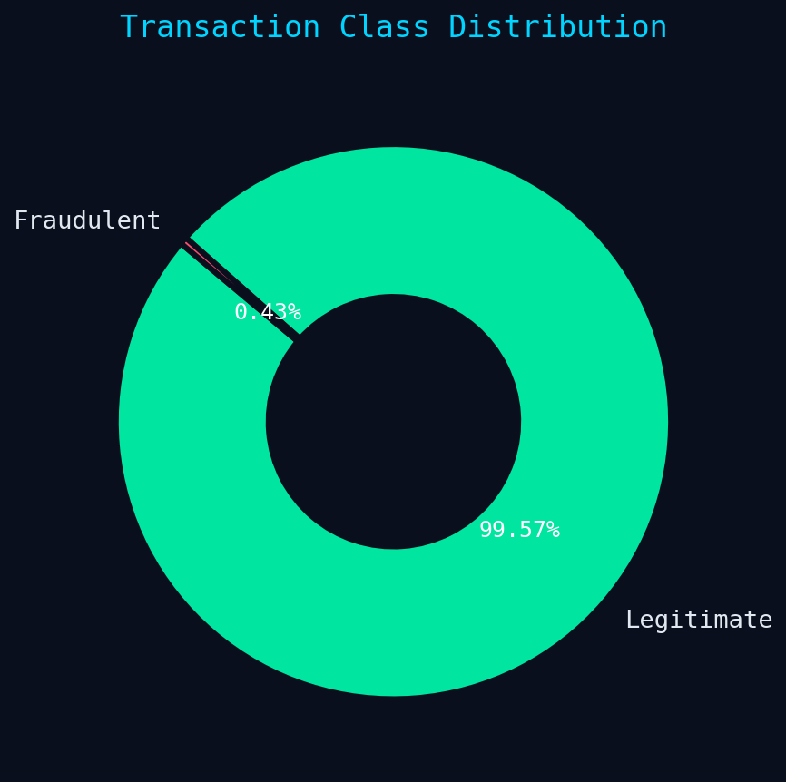
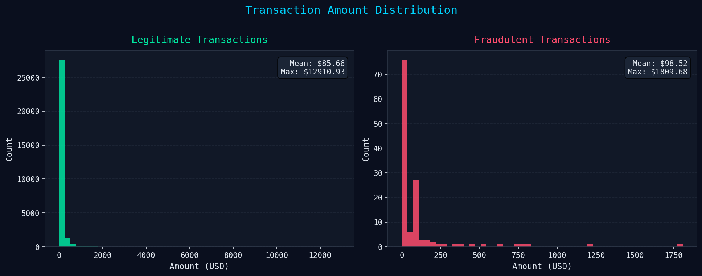
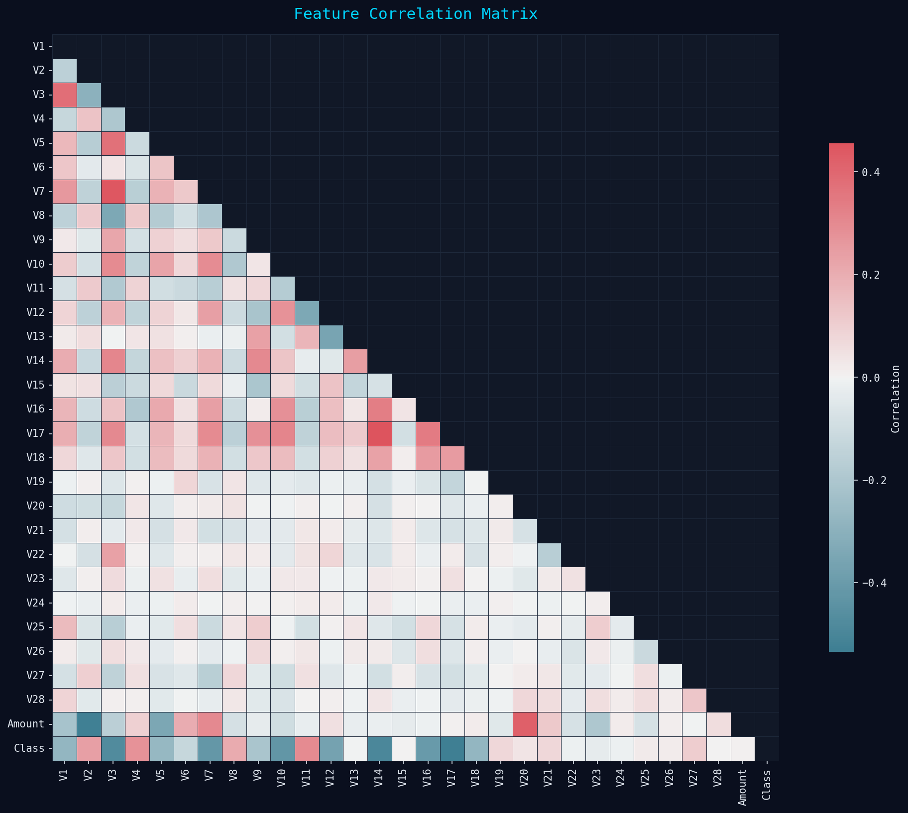
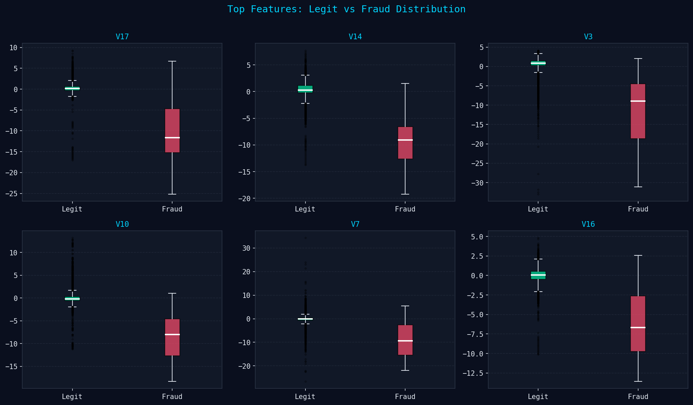
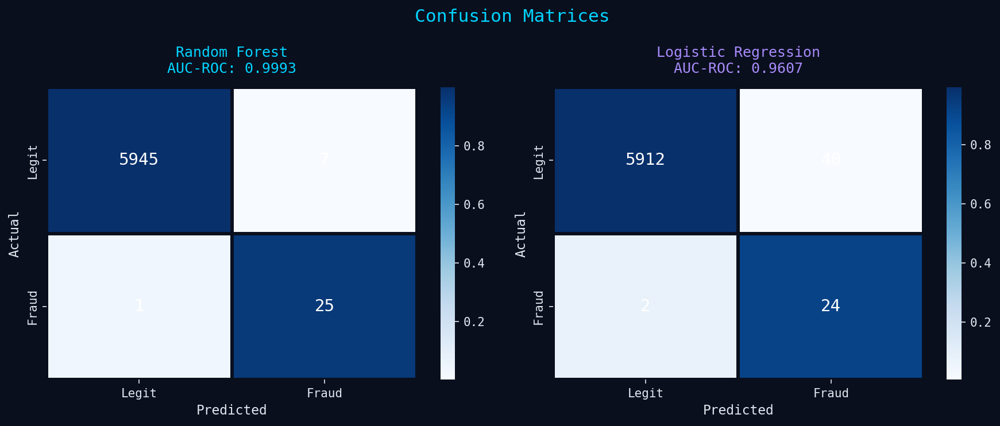
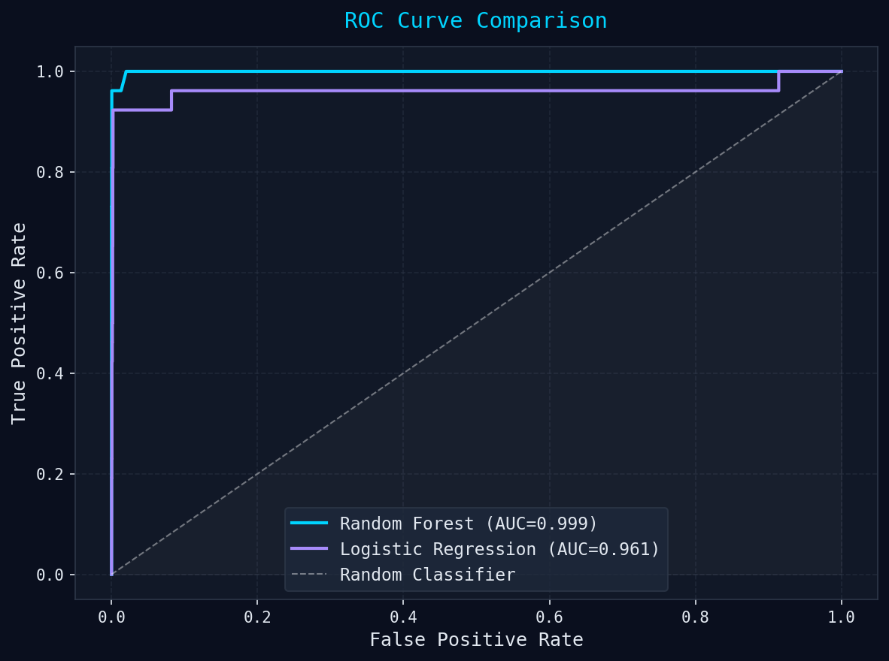
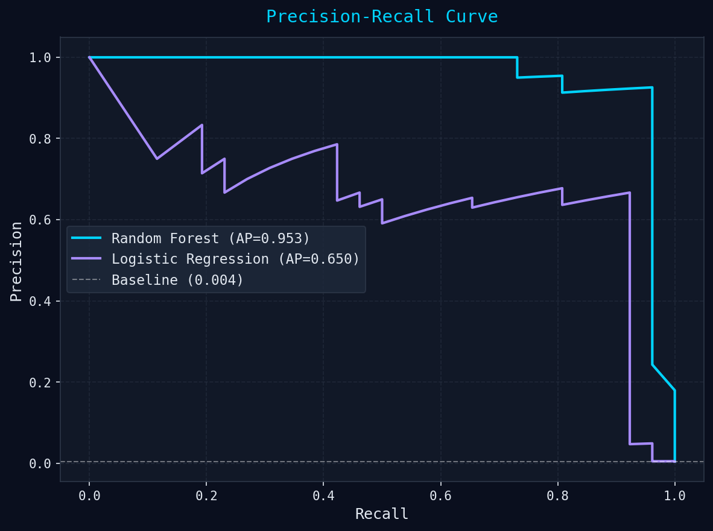
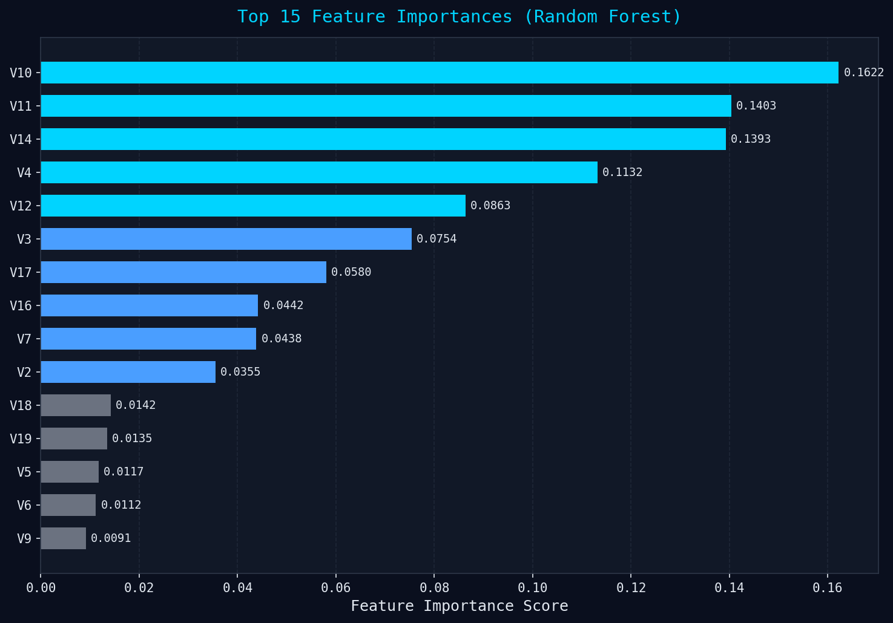

An end-to-end machine learning system to detect fraudulent transactions using SMOTE oversampling, feature engineering, and ensemble models trained on real Kaggle credit card transaction data.
This project addresses the critical challenge of detecting fraudulent credit card transactions in a highly imbalanced dataset (only 0.43% fraud). We implement the full data science lifecycle from raw data to a deployable detection model.
Import Kaggle credit card transactions dataset. Handle privacy and security compliance.
Identify fraud percentage and anomalies in transaction amounts across the dataset.
Handle imbalance with SMOTE. Normalize numerical features for model training.
Histograms, boxplots, and correlation matrices to understand feature distributions.
Feature importance to identify the top fraud indicators from 29 PCA features.
Random Forest model to flag suspicious transactions with near-perfect AUC.
The dataset contains credit card transactions with 28 anonymized PCA-transformed features (V1–V28), transaction time, amount, and a binary fraud label.
End-to-end pipeline from raw CSV to trained models ready for real-time inference.
Visual analysis of the dataset reveals severe class imbalance, distinct amount patterns, and high-value PCA features for fraud detection.




With only 0.43% fraud, a naive model would learn to ignore fraud entirely. SMOTE generates synthetic minority-class samples using k-nearest neighbours.
Two classifiers trained and evaluated. Random Forest dramatically outperforms Logistic Regression on this dataset — especially on precision for fraud class.
Note on Precision vs Recall tradeoff: In fraud detection, recall is critical — missing a fraudulent transaction (false negative) is far more costly than a false alarm (false positive). The Random Forest achieves 96.15% recall meaning it catches nearly all fraud cases, while maintaining a reasonable 78.12% precision.
ROC curves, precision-recall curves, confusion matrices, and feature importances.




Built with Python's data science ecosystem.